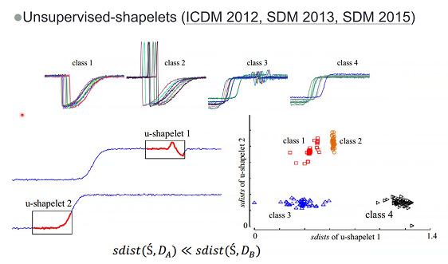

每日的周报汇总
Table of Contents
1 time series similarity measures
1.1 metric
1.1.1 euclidean distance
lve. 不好使.
1.1.2 DTW (Dynamic Time Warping)

为了弥补相位差等别的一些原因，通过一定的warp方式进行soft，也就是， 建立两个时间序列的一个矩阵，即计算该矩阵中每个相位移动下的欧式距离,从而找到一条"最短通路",而后,在这种最短通路下进行欧氏距离的聚合.当然,这种方法的计算复杂度是特别高的.
UCR Suite
1.2 search method
1.2.1 UCR Suite

phw:使用神经网络去进行时间序列的相似度计算，这种思路是否可行呢？
sfy：时间序列的相似度度量更加看重于效率。使用神经网络也可以。
phw：传统的排序算法（数据结构里面的一些算法），也使用神经网络进行处理，变化成可微分的一种操作。这样的原因是：排序等基本计算是整个大系统的一个小部分，对于端到端的训练具有很大的意义，因此具有用神经网络替代传统的方式的意义。如果神经网络需要一个对“时间序列相似度”的处理，而对于一个端到端的系统中的这样一个子环节，其可微分是具有一定意义的。从这个角度来看，能否开展“时间序列相似度度量”的神经网络化。
jzz：听不太清。
sfy：只考虑时间序列，没有考虑“语音识别”这种特殊的语境。
1.2.2 SSH 近似序列搜索
{kind=link}
- sketching：实数-》+1，-1序列
- shingle：-1，1序列片段-》集合
- hash：集合与集合，使用LSH方法计算其相似度

zym:为什么要用1.与2.变换成集合,而不是直接对时间序列进行(量化等)处理之后直接LSH呢?
sfy:也有这种思路,但是没有这么做的.

我的想法:不能,因为如果直接映射,那么就丢失了时间序列最重要的序列信息.但是上图这种将一段系列变成一块,或许是可行的?
针对SSH对超参数敏感的问题:
1.2.3 clustering subsequences
没有特别听明白,天呢.

1.2.4 一点点疑问
究竟啥是random walk啊! shapelet究竟是什么东西?
1.2.5 Use Matrix Profile
对序列切割成若干个子序列,然后计算子序列之间彼此的欧氏距离
1.2.6 progressive similarity search

1.2.7 对带高频噪声的时间序列的处理
小波变换→ 指纹→ 计算

2 self-similarity ICML2019
如何为SGD挑选合适的数据点,使得模型尽快收敛.
2.1 COO Arrangement


3 sketch 与基因序列挖掘 贾鹏
3.1 GATK(Genome Analysis Toolkit)
数据->云端计算->结果传输回来.